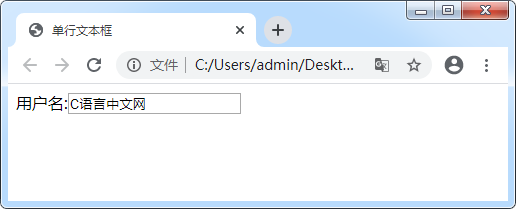

首页 > 编程笔记
HTML单行文本框
网站的登录或注册页面，用户名一栏使用的一般为单行文本框。例如 C语言中文网的登录（http://vip.biancheng.net/login.php）或注册（http://vip.biancheng.net/register.php）页面用户名栏的文本框，使用的就是单行文本框。
在 HTML 中，把 <input> 标签的 type 属性设置为 text 可以表示单行文本框，又叫做常规文本框。具体语法格式如下：
在 HTML 中，把 <input> 标签的 type 属性设置为 text 可以表示单行文本框，又叫做常规文本框。具体语法格式如下：
<input type="text" />
接下来我们看一个具体的例子：
<form action="http://vip.biancheng.net/login.php" method="post" name="myForm">
用户名:<input type="text" name="username" value="C语言中文网"/>
</form>
运行效果如图所示：

图1：单行文本框
通过运行结果可以发现，文本框中的值为定义的 value 属性的值。当需要告知用户某一栏数据时，我们通常这样写。如果只是想获取用户输入的数据，通常不设置 value 属性值，由用户自行输入。
注意：文本框的默认数据用户可以进行删除、修改，也可以让它继续保持现有值，提交时会按照文本框现有内容进行提交。
当 <input> 标签作为单行文本框使用时，除了 value 属性还可能用到以下两个属性：1) maxlength属性
在 <form> 表单中，允许使用 maxlength 属性设置文本框中最多可以输入的字符数量（包括空格）。如果我们要对年龄输入框设置，可以这样写：
<form action="http://vip.biancheng.net/login.php" method="post" name="myForm">
年龄:<input type="text" name="age" maxlength="3" />
</form>
我们都知道，年龄没有超过三位数的，所以我们为年龄文本框设置最多可以输入 3 字符，当用户输入第 4 个字符时，不再允许输入。
2) size属性
size 属性用来定义文本框可见的字符数。可以这样使用：
<form action="http://vip.biancheng.net/login.php" method="post" name="myForm">
年龄:<input type="text" name="age" size="3" />
</form>
与 maxlength 不同的是，size 定义的是文本框可见的字符数，当用户输入的字符数超出这个值时，还可以输入只是不再显示。我们不建议为文本框设置 size 属性，目前很少有人这么做。如果需要，应该使用 CSS 设置文本框的宽度。
关注公众号「站长严长生」，在手机上阅读所有教程，随时随地都能学习。内含一款搜索神器，免费下载全网书籍和视频。

微信扫码关注公众号